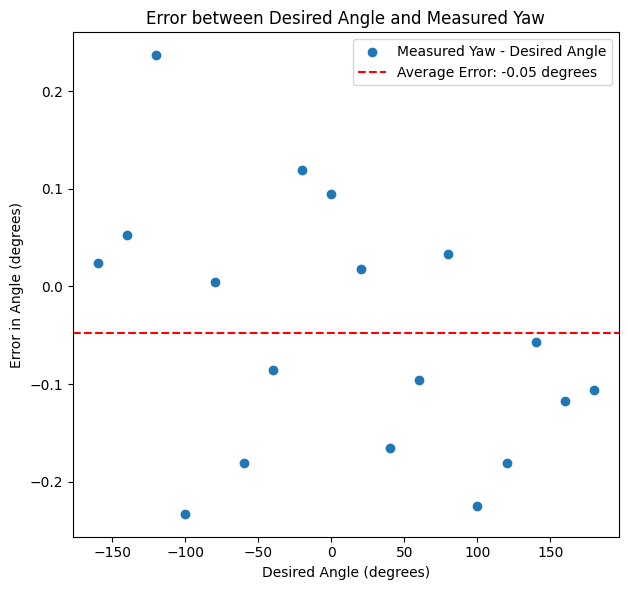
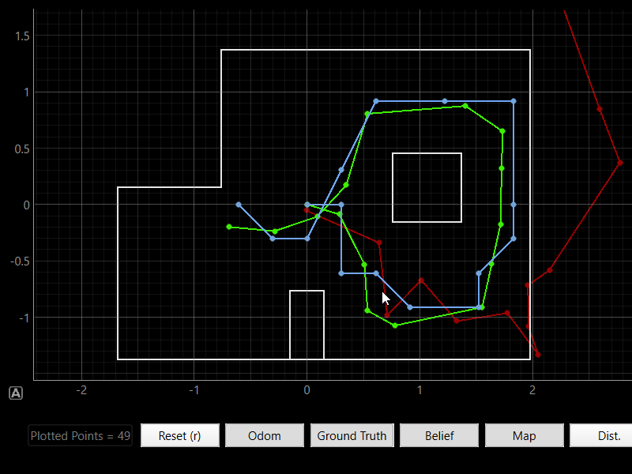
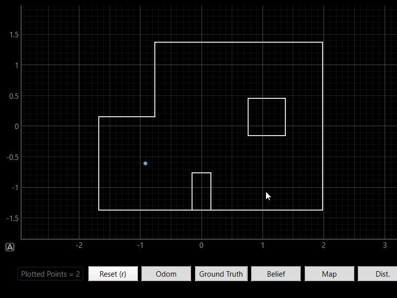

Fast Robots: Lab 11

Bayes Filter • Localization • Jupyter Notebooks
Localization (Real)
This lab is about using a known map and sensor data to estimate the robot's position using Bayes Filter, but using a physical robot.
Bayes Filter • Localization • Jupyter Notebooks
This lab is about using a known map and sensor data to estimate the robot's position using Bayes Filter, but using a physical robot.
Identical to the last lab, we want to perform grid localization using Bayes Filter, which means we need to discretize our world into a grid. How we've chosen to do this, is to transform a world of [-1.6764, 1.9812] meters in x, [-1.3716, 1.3716] meters in y, and [-180, 180) degrees in theta into a grid of 20 x 20 x 18 cells, where each cell represents a 0.3048m x 0.3048m x 20 degree section of the world. A visualization of this grid is shown below.

For the actual implementation of the Bayes Filter, we will be using the same exact odometry and sensor models as in the last lab.
Here, we will just be performing the update step of the Bayes Filter. We placed the robot at set points in the map, and had it spin at 20 degree increments to match the orientation discretization of our grid. At each angle, it took a distance measurement using the front facing distance sensor, which we can then use to perform the update step of the Bayes Filter. Similar to Lab 9, we will be using the same notification system to trigger the turning and measurement taking with the code shown below. For more information on the notification system, see Lab 9's report.
async def perform_observation_loop(self, rot_vel=120):
num_readings = self.config_params['mapper']['observations_count']
increment = - (360 // num_readings)
for i in range(0, -360, increment):
self.setpointReached = False
self.sentValidNotifDistance = False
self.sendingValidNotifDistance = False
ble.send_command(CMD.PID_ROTATE_START, f"{i}|{10 * 1000000}")
self.start_time = time.time()
await wait_for_setpoint()
await asyncio.sleep(0.5)
if self.setpointReached:
await wait_for_valid_distance()
# output should be a column vector
sensor_ranges = np.array(self.notif_distanceB_data)[np.newaxis].T
sensor_ranges = sensor_ranges / 1000.0 # convert from cm to m
sensor_bearings = np.array(self.notif_yaw_data)[np.newaxis].T
return sensor_ranges, sensor_bearingsThen, we can use these to perform the update step.
# Init Uniform Belief
loc.init_grid_beliefs()
# Get Observation Data by executing a 360 degree rotation motion
await loc.get_observation_data()
# Run Update Step
loc.update_step()Because the grid of our world is discretized into 20 degree sections in the theta dimension, we need to make sure that the robot is actually facing in 20 degree increments when it takes its sensor measurements. We used the PID loop from lab 6 to control the robot's angle but changed the parameters to be more aggressive to get measurements faster and stay on axis when rotating, and removed the integration term since we can achieve almost no steady state error with just proportional gain. We changed the parameters to be \(K_p = 8\), \(K_i = 0\), and \(K_d = 0.0\), which resulted in a very stable loop that was able to keep the car at a set angle with an average error of 0.05 degrees and a max error of about 0.25 degrees on the smooth surface of Tang Hall's floor, which is good enough for our purposes since at the maximum range of our sensor (4m), an error of 0.25 degrees would result in a distance error of <0.04 mm which is negligible for our purposes. Below is a plot of the error in angles while performing the 360 rotation.

The Bayes Filter implementation is

Below are the results of actually localizing the robot using the Bayes Filter implementation on the physical robot. The blue dots represent the estimated position of the robot based on the Bayes filter, the green dot represents the true position of the robot. As we can see, the robot is able to localize itself pretty well, perfectly estimating its position in two scans, and getting a pretty good estimate in the other two scans as well. All the locations were pretty geometrically distinct which helped. The main source of error is probably the robot not turning perfectly on axis, shifting the measurements slightly and causing the robot to think it's in a different grid cell. Another reason could be that the further away a wall is, the noiser the sensor measurements are, which could also cause the robot to think it's in a different grid cell, which would explain why the results are worse in the more open areas of the map. But overall, the results are pretty good and show that our implementation of the Bayes Filter is working correctly.



And here is a video of the robot localizing itself in real time for the second plot.
I used Stephan Wagner's website as a reference for the report.
Copyrights © 2019. Designed & Developed by Themefisher